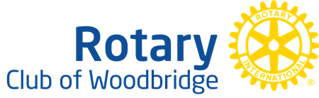

Venue map
.png)
 Vaughan Youth Council
Vaughan Youth Council
Register for the Vaughan Youth Network Fair and discover opportunities to learn, lead, volunteer, and make a difference in your community.
Register for the fair
Doors open
Opening overview of event
Networking begins
Main networking period
Meet community leaders!
Closing remarks and thank-you announcements.
Doors close
Explore the groups joining us and learn how you can take your next step in the community.

Offering community members a hands-on opportunity to drive positive change through service projects, youth empowerment programs, and local initiatives that strengthen Woodbridge and support global causes.

Offering year-round environmental education and outdoor programming for families, schools, camps, youth, and adults.

A student-led initiative supporting women and families facing financial and domestic hardship across the Greater Toronto Area through shelter resource drives, advocacy, and student leadership opportunities.

Fostering peer mentorship by pairing motivated volunteers (ages 16–29) with youth (ages 6–15) across Toronto and York Region to build confidence, leadership, and community connection.

A student-led organization making STEM exciting and accessible for youth through interactive workshops, curiosity-driven science experiments, and hands-on learning.

Supporting individuals and families impacted by intimate partner violence through emergency shelters, community counseling, public education, and advocacy programs

Providing accessible, free, and affordable educational programming, tutoring, and skill-building resources to students across York Region and beyond.
A not-for-profit organization dedicated to securing the future of the short film industry.
.png)
Building a healthier, more sustainable, and more equitable food system across York Region while empowering young people through the York Region Youth Food Committee to build leadership skills, participate in community workshops, and advocate for food justice.
.png)
Accelerating youth innovation for good by equipping young people with resources to launch impactful projects, including the Skills Generator: Human x Tech program in York Region, which helps youth learn AI, build in-demand skills, and grow their networks.
.png)
Enriching the community by providing access to educational resources, public space, skill-building programs, and volunteer opportunities across Vaughan.